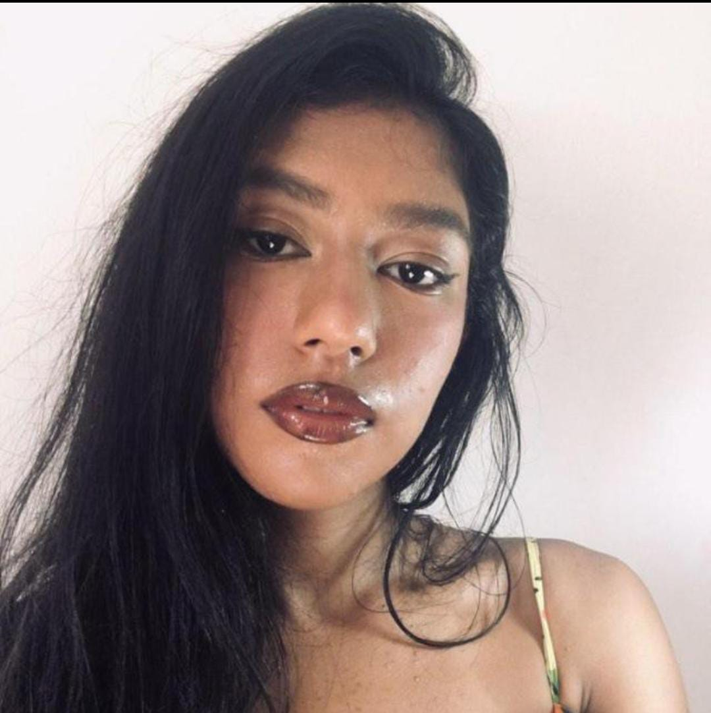

Quem é a Artista
Me chamo Eduarda Saraiva, conhecida artisticamente como Duda Artes. Sou uma artista visual apaixonada por criar obras que representam a cultura preta e promovem a representatividade. Tenho 18 anos e atualmente moro em Mossoró, Rio Grande do Norte. Desde muito jovem, descobri na arte uma forma poderosa de expressão e conexão com minhas raízes. Minha jornada artística é marcada pela busca de valorizar a beleza, a história e a diversidade da cultura preta através de minhas criações. Além disso, também produzo ecobags personalizadas, unindo arte e sustentabilidade em cada peça que crio. Minha maior missão como artista é inspirar e empoderar outras pessoas, especialmente crianças e jovens negros, a se reconhecerem e se valorizarem por meio da arte.
Como Tudo Começou
A paixão pela arte surgiu ainda na infância, quando desenhar e pintar se tornou uma forma natural de comunicar o que palavras não expressavam. Mas em 2019, percebi que a arte vai muito mais além que isso, e desde então venho desenhando constantimente, e se intencificou na pandemia. Foi quando eu criei um instagram para compartilhar meus desenhos, e foi com a comunicação e a inspiração de outros artistas que fui melhorando e achando o meu próprio estilo, que ainda está em processo de formação.
O que é Arte Preta
Quando criança, buscava nos desenhos animados e filmes pessoas parecidas comigo. Quando vi o poder da arte, e que eu poderia ter esse poder, busquei o que eu não tive na infância: Representatividade. Arte preta é a representação estética, histórica e emocional da vivência negra. É o fortalecimento da identidade, a valorização da beleza preta e a celebração da ancestralidade. Por isso, em minhas obras, tento trazer elementos da minha vivência, e não só da minha, para que pessoas se sintam representadas.
Propósitos para os Próximos Anos
Busco para os próximos anos expandir meu impacto como artista. É dificil consiliar com a minha vida pessoal e acadêmica, mas pretendo continuar aprimorando minhas técnicas e explorando novas mídias para expressar minha visão artística. Desejo ampliar com a arte digital e as ecobags personalizadas, para que consiga uma renda extra e investir em novos materiais. Quero também colaborar com outros artistas e participar de exposições que promovam a arte preta. Meu maior objetivo é continuar inspirando e empoderando outras pessoas através da arte, contribuindo para um mundo mais inclusivo e representativo.
Significados das Artes
Cada arte que crio carrega um significado especial, refletindo minhas experiências, emoções e a cultura preta e brasileira. Abaixo, compartilho o significado de algumas das minhas obras mais importantes:
Jesus Chorou